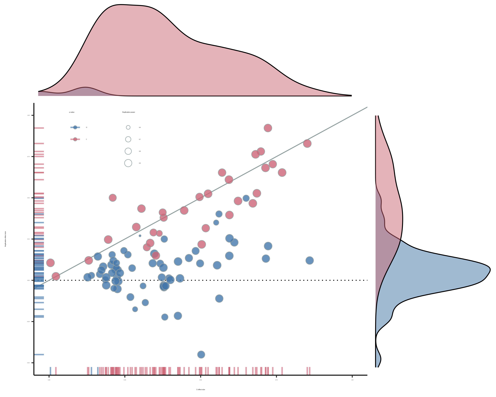
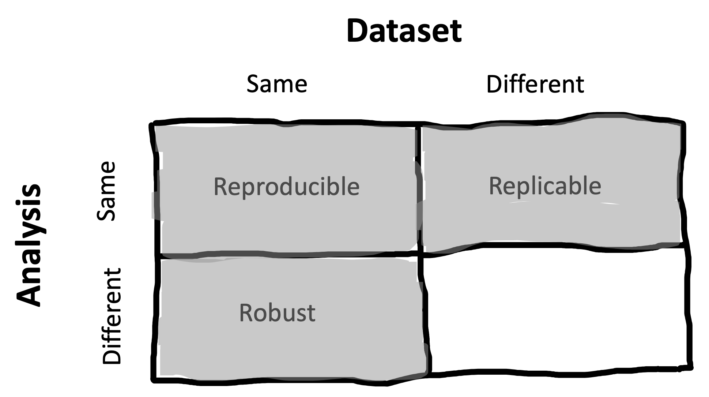
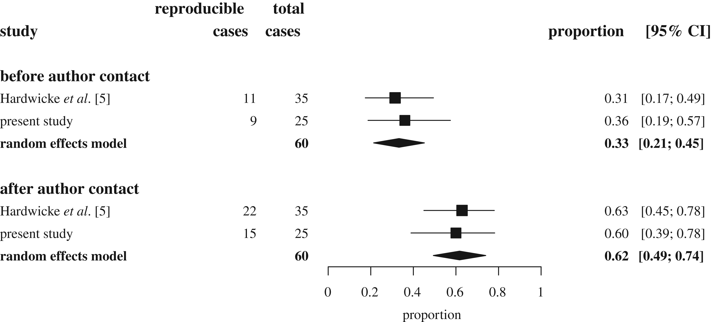
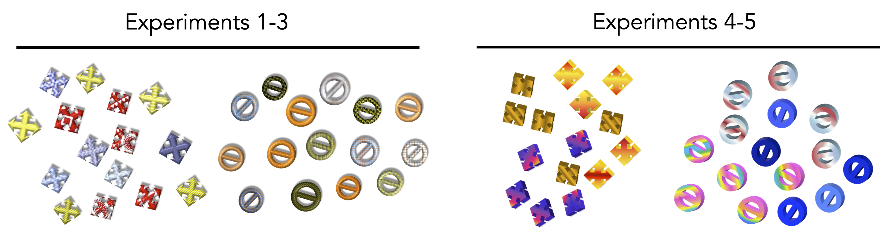
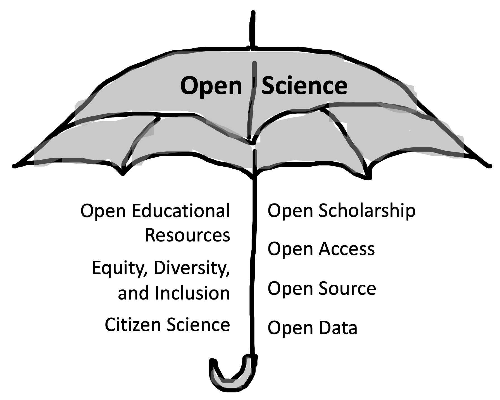

3 重复验证
注记学习目标
- 定义并区分 reproducibility（可复现性）和 replicability（可重复性）
- 综合关于 replication 及 replication 失败原因的 metascience 文献
- 推理 replication 与 theory building 之间的关系
在前几章中，我们介绍了实验、实验与因果推断的联系，以及实验在建立心理学理论中的作用。原则上，反复开展实验研究并结合 theory building，应该能够形成强有力的研究项目，让我们以越来越大的适用范围解释和预测现象。
然而，近些年来，越来越多人意识到：这种理想化的科学图景，可能并不能很好地描述我们实际在心理学文献中看到的情况。许多经典发现可能是错的，或者至少被夸大了。它们的统计检验可能不值得信任。很多论文里的实际数字甚至也是错的！而且，即使某些实验发现是“真实的”，它们也未必能广泛推广到不同的人和不同的情境中。
我们怎么知道这些问题存在？一个快速发展的领域，叫做 metascience，正在提供证据。Metascience 是关于研究本身的研究——例如，考察某个文献中的发现有多常能够被后续研究成功建立在其上，或者试图弄清楚某些负面研究实践到底有多普遍。Metascience 让我们能够超越关于某组有问题结果的零散轶事，或关于不良实践的传闻。也许最明显的警讯是：当独立科学家在 metascience 项目中组队，试图重复先前研究时，他们常常得不到相同结果。

1 你可能已经注意到，这里“相同”这个词承担了很多工作。我们如何操作化实验程序、统计分析、样本或结果的“相同”？这些都是很难的问题，下面我们会触及。请记住，这些问题没有单一答案，因此这些术语始终只是有用的指南，而不是精确标签。
在开始回顾这些证据之前，我们先讨论科学发现可以被“重复”的几种不同方式。图 3.1 为我们的定义提供了一个基本起点。对于论文中的某个特定发现，如果我们拿同一份数据、做同样的分析，并得到相同结果，我们就说这个发现是 reproducible（有时也叫 analytically 或 computationally reproducible，即分析上/计算上可复现）。如果我们用同样的方法收集新的数据、做同样的分析，并得到相同结果，我们就把这称为一次 replication，并说这个发现是 replicable。如果我们用同一份数据做不同分析，我们称之为 robustness check；如果得到类似结果，我们就说这个发现是 robust。1 我们把最后一个象限留空，因为文献中没有专门术语来称呼它——最终目标是得出 generalizable 的结论，但这个术语的含义不只是一个发现既 reproducible 又 replicable。
在本章中，我们主要讨论 reproducibility 和 replicability（robustness 会在 章 11 中稍微讨论）。我们会先回顾与 reproducibility 和 replicability 相关的关键概念，以及一些重要的 metascience 发现。这些文献提示我们：当你阅读一篇普通心理学论文时，默认预期应该是它可能无法 replicate！
接着，我们会讨论发现无法 replicate 的一些主要原因，尤其是 analytic flexibility 和 publication bias。最后，我们会讨论 reproducibility 和 replicability 如何与心理学中的 theory building 相关，以及 open science 在这场讨论中的角色。这一讨论会聚焦于 transparency（本书的主要主题之一）在支持 theory building 中的关键作用。
3.1 Reproducibility（可复现性）
科学论文里充满数字：样本量、测量值、统计结果和可视化。要让这些数字有意义，并让其他科学家能够核查它们，我们就需要知道它们从哪里来，也就是它们的 provenance。科学家从原始数据一路处理到论文中报告数字的行动链条，有时被称为 analysis pipeline。在科学史上的很长一段时间里，科学论文通常只对 analysis pipeline 提供文字描述，而且细节很少。2
2 Buckheit 和 Donoho (1995, p. 5) 中一个很有预见性的说法很好地概括了这种情况：“A scientific publication is not the scholarship itself, it is merely advertising of the scholarship. The actual scholarship is the complete software development environment and the complete set of instructions which generated the figures.”
3 很多年来，像 American Psychological Association 这样的专业学会都要求共享数据（https://www.apa.org/ethics/code），但仅限于验证目的，而且只是在“按要求提供”的情况下——换句话说，科学家默认可以把数据藏起来，只有当另一位科学家请求访问时，才有责任共享。实践中，这类政策并不起作用；数据很少会在请求后被提供 (Wicherts 等 2006)。我们认为这种状况站不住脚。我们会在 章 4 中给出更长的论证来说明为什么应当共享数据，并在 章 13 中讨论共享的一些实践问题。
此外，研究者通常不会分享这个 pipeline 中的关键研究对象，例如分析脚本或原始数据 (Hardwicke, Thibault, 等 2021)。3 没有代码和数据，科学论文中报告的数字通常不可复现——独立科学家无法重复 analysis pipeline 中的所有步骤，并得到与原作者相同的结果。
Reproducibility 之所以值得追求，有很多原因。没有它：
- 计算或报告错误可能导致报告结果与实际结果不一致
- 对分析计算过程的模糊文字描述，可能让读者无法理解实际执行了哪些计算
- 无法检查数据分析对替代模型设定的 robustness
- 更难综合多项研究的证据；而这正是建立累积性科学知识的关键部分
在这个列表中，错误检测和纠正大概是最紧迫的问题。但错误常见吗？已发表文献中有大量个别错误被纠正的例子 (e.g., 我们中的一些人就在 Cesana-Arlotti 等 2018 中发现过一个错误)，我们自己也犯过重大的分析错误 (e.g., Frank 等 2013)。但这些经历并不能告诉我们，一般来说错误有多频繁（或者错误会对研究者得出的结论产生什么后果）。4
4 Gould 的 (1996) The Mismeasure of Man 中有一段非常有意思的讨论，谈到科学错误对 theory building 的有害作用。Gould 考察了关于种族智力差异的研究，并记录了支持种族差异的科学错误如何常常被忽视。错误往往是非对称地被发现的；当一个结果违背我们的偏见时，我们更有动力去复查它。
估计错误频率是一个 metascience 问题，多年来研究者一直尝试回答它。如果错误很频繁，那就说明我们需要改变政策和实践，以降低错误频率！不幸的是，数据不可得造成了一个问题：如果你一开始就无法检查计算，那么就很难判断计算是否错误。这里有一个处理这个问题的聪明办法。在标准 American Psychological Association (APA) 报告格式中，推断统计量必须报告三项信息：检验统计量、该检验的自由度，以及 \(p\) 值（例如 \(t(18) = -0.74\), \(p = 0.47\)）。然而，这些信息彼此冗余。因此，只要评估它们是否彼此对得上，就可以检查报告统计量的一致性——也就是说，从 \(t\) 值和自由度 重新计算出来的 \(p\) 值，是否与报告值一致。
Bakker 和 Wicherts (2011) 在 281 篇论文的样本上进行了这种统计一致性分析，发现约 18% 的统计结果报告有误。更令人担心的是，约 15% 的文章至少包含一个 decision error——也就是错误改变了所做推断方向的情况（例如，从显著变为不显著）。5 Nuijten 等 (2016) 使用一种叫做 “statcheck” 的自动化方法6 来确认并扩展这项分析。他们检查了 1985–2013 年期间 250,000 多篇心理学论文中的 \(p\) 值，发现大约一半论文至少包含一个错误的 \(p\) 值！
5 这印证了 Gould 的推测（见上方注释）：大多数导致 decision error 的报告错误都与研究者自己的假设方向一致。
6 Statcheck 现在可以作为 web app（http://statcheck.io）和 R package (Nuijten 和 Epskamp 2024) 使用，所以你可以检查自己的 manuscript！
这些发现为文献中的错误数量提供了一个下界，并提示分析的 reproducibility 很可能非常重要。不过，它们只处理统计报告的一致性。如果我们尝试从头到尾重复整个 analysis pipeline，会发生什么？要在大规模上回答这个问题相当困难：第一，运行一次 reproducibility check 需要很长时间；第二，由于无法访问原始数据，对于大多数科学论文来说，检查 reproducibility 是不可能的。
不过，几年前，我们中的一组人发现了一个检查 reproducibility 的机会：考察两本要求或鼓励数据共享的期刊上发表的研究。Hardwicke 等 (2018) 和 Hardwicke, Bohn, 等 (2021) 首先识别出共享数据的研究，然后进一步筛选出共享了可复用数据的研究（数据可访问、完整且可理解）。对于其中 60 篇文章，我们随后尝试复现论文中特定统计结果相关的数值。这个过程极其耗费人力，每篇文章通常需要 5–10 小时工作。结果令人担忧：只有大约三分之一文章中的目标数值，在没有原作者帮助的情况下完全可复现！在很多情况下，经过与原作者——有时是大量——通信之后，作者提供了原论文中没有报告的额外信息。在联系作者后，reproducibility 成功率提高到 62%（图 3.2）。其余论文似乎有一些数值，无论是我们还是原作者都无法复现。重要的是，我们没有发现任何会严重削弱原文结论的不可复现模式；不过，其他 reproducibility 研究发现了令人不安的高数量 decision errors (Artner 等 2020)，尽管整体成功率稍高一些。

总之：transparency 是降低已发表文献中错误频率的关键要求。已发表文献中的报告错误和计算错误很常见，而识别这些错误依赖于发现本身是否 reproducible。如果数据不可得，那么错误通常就无法被发现。
注记案例研究
Open Science Collaboration
大约在 2011 年，我们第一次教授 Experimental Methods 课程，课程模型基于我们和 Rebecca Saxe 合作设计过的一门课 (Frank 和 Saxe 2012)。这个想法是通过让学生运行 replications，向他们介绍研究的具体操作。一个叫 Brian Nosek 的人当时正在附近休 sabbatical；喝咖啡时我们得知，他正在启动一个雄心勃勃的项目，想要 replicate 2008 年发表在顶级心理学期刊上的一大批研究。
那一年课上，我们从 Nosek 告诉我们的样本中选择 replication projects。其中四个项目执行得很好，并被课程助教提名纳入更大的项目。几年后，当最终 100 项 replication studies 完成时，我们看到了结果（图 3.3）。
这篇最终产生的 metascience 论文，我们和其他人称之为“心理学中的 replication project”（RPP），对心理学家和更广泛的研究共同体都产生了很大影响；它既定义了心理学 metascience 研究的一个领域，也为多作者协作项目提供了模板 (Open Science Collaboration 2015)。但最引人注目的是结果：令人失望的是，只有大约三分之一 replications 得到了与原始研究相似的发现。其他研究得到的效应更小，而且在 replication sample 中不具有统计显著性（几乎所有原始研究都是显著的）。RPP 提供了第一个大规模证据，表明心理学文献中的 replicability 存在系统性问题。
不过，RPP 的结果及其解释具有争议，也引发了大量讨论。尤其是，批评者指出原始研究与 replications 之间存在不同程度的 fidelity；replications 的 statistical power 不足、证据价值较低；对文献的抽样不具代表性；以及很难确定用哪些具体统计结果来判定 replication success (Gilbert 等 2016; Anderson 等 2016; Etz 和 Vandekerckhove 2016)。在我们看来，许多批评都有道理；你不能简单地把 RPP 的结果解释为文献中结果 replicability 的无偏估计，尽管论文标题好像暗示了这一点。
尽管如此，RPP 的结果仍然重要而有说服力，并且不可否认地改变了心理学领域的方向。许多优秀研究都是这样的——它们有缺陷，但会激发后续研究来处理这些问题。对我们中的几个人来说，参与这个项目本身也具有转变意义，因为它让我们看到协作工作的力量。我们一起做出了一项我们任何一个人都不可能独立完成的研究，并且有可能对自己的领域产生影响。
3.2 Replication（重复验证）
除了核查论文原始的 analysis pipeline 之外，我们常常还想知道研究能否被 replicate——如果我们重复研究方法并获得新数据，会不会得到类似结果？引用 Popper (1959, p. 86) 的说法，“The scientifically significant … effect may be defined as that which can be regularly [replicated] by anyone who carries out the appropriate experiment in the way prescribed.”
开展 replications 可以有很多原因 (Schmidt 2009)。一个目标是验证：如果尽最大能力以完全相同的方式再次开展某项现有研究，是否还能得到它的结果。第二个目标是通过开展更大的 replication study，或者把 replication study 的结果与既有研究结合起来，获得对目标效应更精确的估计。第三个目标是考察当实验操纵以不同但仍符合理论的方式实施时，某个效应是否仍然存在。或者，我们可能想考察这个效应是否会在另一个 population 中持续存在。这类 replications 常常是在努力“replicate and extend”，无论是同一研究团队想开展一系列彼此递进的实验，还是一个新团队想建立在他们读过的一篇论文结果之上，这都很常见 (Rosenthal 1990)。
metascience 文献中的大量讨论（以及随之而来的争论）都聚焦于第一个目标——简单验证。这个焦点如此强烈，以至于“replication”一词已经和怀疑主义，甚至对领域根基的攻击联系在一起。这种动态与许多科学哲学中赋予 replication 的角色相冲突；在那里，replication 被假定为“normal science”的典型组成部分。
3.2.1 Replication 的概念框架
Replication 的关键挑战是 invariance——也就是 Popper 在上面引文中规定 replication 应当“按规定方式”开展。也就是说，对于某个特定观察，世界的哪些特征应当相对恒定？哪些特征被指定为产生效应的关键成分？Replication 在物理科学和生物科学中相对直接，部分原因是这些领域有预设的理论背景，使我们能够对 invariance 做出强推断。如果一位生物学家报告了关于某种生物特定细胞类型的观察，显微镜的颜色通常被假定不会影响这个观察。
在心理学中，无论是对于实验程序还是样本，这些 invariances 都难以陈述得多。从程序上说，实验刺激的颜色应不应该影响被测量的效应？有时应该，有时不应该。7 然而，假设一个科学效应应当如何对实验室程序保持 invariant，已经很难；相比之下，假设这个效应应当如何跨不同人类 populations 保持 invariant，难度还要大得多！8
7 在一项很有意思的研究中，Baribault 等 (2018) 提出了一种经验性理解心理学 invariances 的方法。他们以 subliminal priming effect 为模型系统，抽样了数千个“micro-experiments”，在这些实验中，实验程序的小参数被随机抽取。这些参数允许他们测量目标效应，并在这种无关变异上取平均。在他们的案例中，结果发现颜色并不重要。
8 在某种意义上，社会科学某些分支的研究项目，就是在理解人类认知中的 invariances。
9 如果 Toad 博士用英语而不是德语给出原始指导语，大概不会太不安——这也是我们一直担心的那些麻烦 invariances 之一！
这场讨论关系重大。如果 Frog 博士基于美国本科生发表了一个发现，而 Toad 博士随后在德国“replicates”了这个程序，那么如果效应大小不同或者效应消失，我们应该在多大程度上感到不安？9 Meta-researchers 制定了许多 replication taxonomies，试图量化两个实验之间的方法一致性程度。
一些研究者试图区分 “direct replications”10 和 “conceptual replications”。Direct replications 试图复现先前研究的所有 salient features，直到实验者认为存在的那些 invariances 为止（例如油漆颜色或实验者性别）。相比之下，conceptual replications 通常是一些试图通过不同的操纵和/或测量操作化来检验同一假设的 paradigms。我们同意 Zwaan 等 (2018): 把第二类实验标记为 “replication” 有点误导。更准确地说，所谓 conceptual replications 其实是对你理论同一部分的不同检验。这类检验可能极有价值，但它们服务的目标不同于 replication。
10 这些有时也被称为 “exact replications”。我们认为这个术语会误导人，因为两个不同实验之间的相似性永远是在一个梯度上变化的，而你在这个连续体上从哪里切开，永远都是一个带有理论负载的决定。一个人的“exact”，可能就是另一个人的“inexact”。
注记事故报告
“Small Telescopes”
我们一直在讨论关于程序和样本的 invariance 问题，但还没有真正讨论关于研究统计结果的 invariance。我们在多大程度上可以认为两个统计结果是“相同的”？几种显而易见的指标，包括 RPP 使用的指标，都有重要局限 (Simonsohn 2015)。例如，如果一个发现统计显著而另一个不显著，它们的 effect sizes 实际上仍然可能彼此相当接近，部分原因是其中一个研究的样本量可能比另一个更大。或者，你也可能有两个显著发现，但二者的 effect sizes 却非常不同。
在一项经典研究中，Schwarz 和 Clore (1983) 报告说，参与者（\(N = 28\)）在晴天比雨天给自己的生活满意度评分更高，这提示他们把对天气的短暂幸福感错误归因于更长期的生活满意度。然而，两个较新的研究考察了非常大的调查回答样本，得到的效应估计要小得多。（所有这些效应都经过标准化，因此它们可以用一个叫 Cohen’s \(d\) 的指标放在同一尺度上；我们会在 章 5 中更正式地介绍它。）在一项调查中，效应统计显著但极小；在另一项调查中，效应基本为零（图 3.4）。如果用 statistical significance 作为 replication success 的指标，你可能会倾向于说，第一项研究是成功 replication，第二项研究是失败 replication。
Simonsohn 指出，这种解释说不通。他用研究样本量作为望远镜的类比来说明。按照这个类比，Schwarz 和 Clore 拥有一台很小的望远镜（也就是很小的样本量），他们把它指向某个方向，并声称观察到了一颗行星（也就是一个非零效应）。现在，当你用一台大得多的望远镜看过去时，结果可能发现那个位置确实有一颗行星（第一次 replication），也可能发现没有（第二次 replication）。但无论如何，原来的小望远镜根本没有足够 power 去看见那里究竟有什么。无论它们观察到的效应方向是否相同，这两项研究都没有 replicate 原始观察。
沿着 Simonsohn 的例子，许多 replication success 指标被提出 (Mathur 和 VanderWeele 2020)。其中较好的指标会远离“单个 replication 是否成功可以用二元检验判定”的想法，转向比较两个效应，并判断它们是否看起来与同一个理论一致。Gelman (2018) 提出了 “time reversal” heuristic——与其把 replication 想成成功或失败，不如考虑一个替代世界：replication study 先被完成，原始研究随后才出现。
如果我们放下原始研究具有优先性的想法，那么考虑多项实验中所有证据的总和会更有道理。用这种方法来看，天气误归因效应最多也只是人们总体生活满意度判断中的一个微小因素，即便曾经有一项小研究发现了较大的效应。
3.2.2 Replication 的 metascience（元科学）
在 RPP 中，replication teams 主观报告说 39% 的 replications 是成功的，其中 36% 报告了与原始研究同方向的显著效应。这个估计有多 generalizable——更广泛地说，心理学研究到底有多 replicable？基于上面的讨论，我们希望你已经怀疑：至少在没有额外限定的情况下，这不是一个定义良好的问题。任何答案都必须说明这个主张的适用范围、所使用的 replication 定义，以及 replication success 的指标。另一方面，这个问题的不同版本已经催生了许多经验研究，帮助我们更好地理解 replication 问题的范围。
许多后续关于 replication 的经验研究，都聚焦于特定子领域或期刊，目标是为特定领域的实践或问题提供信息。例如，Camerer 等 (2016) replicate 了 2011–2014 年期间两本顶级经济学期刊发表的所有 between-subject laboratory articles。他们发现，与原始研究同方向的显著效应 replication rate 为 61%，高于 RPP 中的比例，但低于基于其 statistical power 水平的朴素预期。另一项研究试图 replicate 2010–2015 年发表于 Science 和 Nature 的全部 21 个行为实验，发现显著效应的 replication rate 为 62% (Camerer 等 2018)。这项研究值得注意，因为他们采用了两步程序——在第一轮 replications 之后，他们会针对失败案例咨询原作者，并追求极大的样本量。因此，得到的估计较少受到原始 RPP 论文许多批评的影响。虽然这些类型的研究不能回答关于 RPP 的所有问题，但它们提示我们：即使在抽样和单项研究方案上都很谨慎，顶级实验的 replication rates 也没有我们希望的那么高。
同一领域中的其他科学家常常能够预测一个实验什么时候会 fail to replicate。Dreber 等 (2015) 表明，prediction markets（参与者用少量真钱押注 replication outcomes 的市场）在总体上能够相当准确地估计 replication success。这个结果本身现在也已经被 replicate 了好几次 (e.g., 在前面描述的 Camerer 等 2018 研究中)。也许更令人惊讶的是，有一些证据表明，根据论文文本训练的机器学习模型也能预测 replication success (Yang, Youyou, 和 Uzzi 2020; Youyou, Yang, 和 Uzzi 2023)，不过仍然需要更多工作来验证这些模型，并理解它们使用了哪些特征。更一般地说，这两条研究线索提示我们，也许可以分离出一些稳定因素，解释 replication success 或 failure。（下一节我们会更深入地考虑这些因素是什么。）
虽然还需要更多工作才能得到关于 replicability 的 generalizable estimates，但合在一起看，metascience 文献确实让我们对应该期待什么有了更清晰认识。总体而言，对于社会心理学和认知心理学中一个普通实验的显著发现，在一次（well-powered）replication study 中得到显著结果的概率很可能约为 56%。此外，replication effect 平均可能约为原效应的 53% (Nosek 等 2022)。
另一方面，这些大规模 replication studies 也有很大局限。除了少数例外，被选择用于 replication 的研究使用的都是较短的计算机化任务，而且大多属于社会心理学和认知心理学类别。进一步说，从 theory development 的角度看，也许最令人不安的是：它们只告诉我们某个特定实验效应是否能被 replicate。它们告诉我们的要少得多：这个效应本来要操作化的 construct 是否真实存在！我们会在本章最后一节回到 replication 和 theory construction 如何相互关联这一困难问题。
有些人把从这些 metascience 研究总和中浮现出来的叙事称为 “replication crisis”。我们把它理解为对已发表文献预期的一次重大降温。你的朴素预期也许很合理：你可以读一篇典型期刊论文，从中选择一个实验，然后在自己的研究中 replicate 这个实验。不幸的是，这些文献的要点是：如果你真的尝试选择并 replicate 一个实验，你很可能会对结果感到失望。
注记事故报告
对研究的后果，对人的后果
“Power posing” 是这样一个想法：采取更加开放、扩张的身体姿势，也可能改变你的自信。Carney, Cuddy, 和 Yap (2010) 告诉 42 名参与者，他们正在参加一项生理记录研究。随后，他们保持两个姿势，每个姿势一分钟。在一个 condition 中，姿势是扩张性的（例如，双腿打开、双手抱头）；在另一个 condition 中，姿势是收缩性的（例如，双臂和双腿交叉）。处于扩张姿势 condition 的参与者睾酮增加、唾液皮质醇（一种压力标记物）下降，他们在赌博任务中承担了更多风险，并且在问卷中报告自己更“in charge”。这个结果提示，一个两分钟的操纵就能带来显著的生理和心理变化——进而使 power posing 稳固地进入商业等领域推荐策略的集合。原始发表也推动了研究者职业生涯的上升，包括成为作者之一 Amy Cuddy 的一个极受欢迎 TED talk 中的核心证据。
不过，后续研究质疑了这些发现。一项样本量更大的 replication study（\(N = 200\)）没有发现 power posing 产生生理效应的证据，尽管它确实发现了一些对参与者自身信念的影响 (Ranehill 等 2015)。而且，一篇对已发表文献的综述提示，许多发现似乎都是某种 publication bias 的结果，因为其中有太多 \(p\) 值非常接近 \(0.05\) 阈值 (Simmons 和 Simonsohn 2017)。鉴于这些证据，replication study 的第一作者勇敢地公开声明，她不相信 “power pose” effects 是真实的 (Carney 2016)。
从科学视角看，很容易把这个例子理解为科学生态系统自我纠正的案例。虽然很多人仍在引用最初的 power posing 研究，但我们怀疑这些问题在整个社会心理学共同体中已经广为人知，而且普通公众的总体兴趣也下降了。但这种叙事遮蔽了自我纠正过程对真实个体造成的影响，而这会提出一些伦理问题：我们应该用什么方式处理科学记录中的问题？
围绕个别发现的辩论和讨论过程可能伤人而复杂。在 power posing 案例中，Cuddy 本人和这些发现紧密绑定，许多对发现的批评也变成了对个人的批评。一些评论者把 Cuddy 的名字当作低质量心理学结果的代称，可能是因为她很有名，也可能还因为她的性别和年龄。这些评论对 Cuddy 个人以及她的整体职业生涯都有伤害。
科学家应当 critique、reproduce 和 replicate 结果——这些都是 normal science 进展的一部分。但重要的是，要以一种对相关人员敏感的方式来做这些事。下面是一些礼貌且合乎伦理的行为准则：
- 始终围绕工作沟通，而不是围绕个人。尽量使用针对被批评的分析或设计的具体语言，而不是针对做出分析或想出设计的人。
- 避免使用预设负面意图的语言，例如“作者误导性地声称……”
- 在你点击发送之前，请别人阅读你的论文、邮件、blogpost 或 tweet。预测别人会如何体验你写作的语气可能非常困难；读者可以帮助你做出判断。
- 考虑先私下沟通，再公开沟通。正如 power posing 争论中的一位批评者 Joe Simmons 所说：“I wish I’d had the presence of mind to pick up the phone and call [before publishing my critique]” (Dominus 2017)。私人沟通并不总是必要（而且由于权力或地位不对称，也可能很困难），但它可能有帮助。
正如我们将在下一章论证的那样，作为科学家，我们有伦理义务促进好的科学，并批评低质量科学。但我们也对同事和共同体负有责任：要善待彼此。
3.3 Replication failure（重复验证失败）的原因
注记深入
Context（情境）、moderators 与 expertise（专业经验）
失败的 replications 有许多解释。Metascience 的好处在于，这些解释可以接受经验检验！
我们先从这个想法开始：某个理论的具体实验操作化可能是 “context sensitive” 的，尤其是在社会心理学这类子领域中，因为它们的理论本来就会指向环境 context (Van Bavel 等 2016)。批评者曾针对 RPP 提出这个问题；其中有几项研究的原始实验材料是为某种文化 context 定制的，但随后被部署到另一种 context 中，可能因为不匹配而导致失败 (Gilbert 等 2016)。
Context sensitivity 看起来是一个很好的解释，因为在某种意义上，它必然是对的。如果实验 context 包含了我们所有人都拥有的庞大学习联结、实践和信念网络，那么毫无疑问，实验材料会在某种程度上触及这个 context。例如，如果你的实验依赖 doctor 和 nurse 概念之间的联结，你就会预期这个实验在过去会以不同方式运行，因为那时 nurse 的含义更接近 nanny (Ramscar 2016)。
另一方面，作为对具体 replication failures 的解释，context sensitivity 的表现并不好。“ManyLabs” 项目是一系列 replication projects，其中多个实验室独立尝试 replicate 若干原始研究。（相比之下，在 RPP 及类似研究中，每个原始研究只进行一次 replication。）一些 Many Labs 项目评估了不同实验室之间 replication success 的变异。在 ManyLabs 2 中，Klein 等 (2018) replicate 了 28 个发现，分布在 125 个不同样本和超过 15,000 名参与者中。ManyLabs 2 几乎没有支持 context sensitivity hypothesis 作为 replication failure 的解释。一般来说，当效应 fail to replicate 时，无论是面对面实施还是在线实施，它们都会失败，而且这些失败在许多文化和实验室中保持一致。
另一方面，一篇对若干 Many Labs 风格 replication projects 的综述在重新分析后指出，即便 replication protocols 彼此非常相似，population effects 在不同 replication labs 之间也存在差异 (Olsson-Collentine, Wicherts, 和 Assen 2020; Errington 等 2021)。所以，context sensitivity 几乎肯定存在——我们会在下一节回到 generalizability、context 和 invariance 的更广泛问题——但到目前为止，我们还没有识别出能够可靠影响 replication success 的具体 context sensitivity 形式。
这些观察——即（1）direct replications 在成功程度上存在差异，但（2）我们无法识别具体的 contextual moderators——合在一起提示，可能存在 “hidden moderators”。也就是说，当面对一项成功的原始研究和一次失败的 replication 时，可能有某个或某些未知因素 moderates 了效应。
我们个人有过几次经历，支持 hidden moderators 这个想法。例如，在 Lewis 和 Frank (2016) 中，我们未能 replicate 一个简单的分类实验。随后，我们对刺激和指导语做了一系列迭代修改，例如改变刺激的颜色和图案（图 3.5），最终得到一个更大（且统计显著）的效应——尽管仍然远小于原始效应。不过关键在于，我们对程序做出的每一次改变，都只带来了很小的效应变化；要准确弄清楚究竟是哪一次改变造成了差异，我们需要数千名参与者。（如果你在记账，这里就是一个刺激颜色确实影响实验结果的案例！）

另一个常被引用的 replication failure 解释是实验者 expertise (e.g., Schwarz 和 Strack 2014)。按照这个假设，replications 会失败，是因为执行 replication 的研究者没有足够 expertise 来开展研究。和 context sensitivity 一样，这个解释在某些 replications 中几乎肯定是对的。在我们自己的工作中，我们反复做过一些实验，而这些实验失败是因为我们自己的 incompetence！
然而，作为对 metascience 发现模式的解释，expertise hypothesis 并没有获得经验支持。首先，团队 expertise 并不是 RPP 中 replication success 的预测变量 (cf. Bench 等 2017)。更有说服力的是，Many Labs 5 从 RPP 中选取了十个未成功 replicate 的发现，并系统评估对 protocols 进行正式专家同行评审（包括由原始研究作者评审）是否会带来更大的 effect sizes。尽管样本量巨大、审查过程极为彻底，经过审查的 protocols 相对于 RPP 中使用的原始 protocol，效应几乎没有变化 (Ebersole 等 2020)。
Context、moderators 和 expertise 看起来都是解释个别 replication failures 的合理因素。当然，我们应当期待它们具有解释力！但如果这些假设要以能够影响我们评估 metascientific evidence 的方式被操作化，它们就必须接受经验评估，而不是被不加批判地接受。当这类评估真的开展时，它们并没有支持这些因素发挥很大作用。
本章的一般论点是：experimental psychology 中并非一切都没问题，因此我们需要改变方法实践，避免产生不可复现论文和不可重复结果这样的负面后果。为了这个目标，我们一直在呈现关于 reproducibility 和 replicability 的 metascientific evidence。但这些证据至少可以说是颇具争议！像 RPP 这样的大规模 replication studies——或者更小规模、针对 “power posing” 这类效应的个别 replications——真的能导向“我们的方法需要改变”这一结论吗？或者，有没有理由认为较低的 replication rate 实际上也可以与一种累积性的、积极的心理学图景相容？
一种论证路径通过科学变化的动态来处理这个问题。这个论证有许多版本，其中一个由 Wilson, Harris, 和 Wixted (2020) 提出。其想法是，心理学进展包含一个两步过程：候选想法先通过小而 noisy 的实验被 “screened”，这些实验揭示出有希望但暂时性的想法；随后这些想法再由大规模 replications 来 “confirmed”。在这种观点下，发现许多随机选择的发现无法在大规模 replications 中站住脚，是 business as usual；因此我们不应该因为 RPP 这样的结果而感到痛苦。进展的关键，是找到少数确实能站住脚的发现，这会导向新的研究领域。我们不确定这种观点是否很好地描述了当前实践，也不确定它是否是科学进步的良好规范目标，但我们这里不会聚焦批评 Wilson 等人的论证。相反，既然这本书是写给正在接受训练的实验者的，我们假定你并不希望自己的实验成为 noisy screening procedure 产生的 false positive，无论你对其余文献有什么感受！
在 RPP 和后续 metascience 研究中，\(p\) 值更低、effect sizes 更大、样本量更大的原始研究更有可能成功 replicate (Yang, Youyou, 和 Uzzi 2020)。从理论视角看，这个结果是可以预期的，因为 \(p\) 值字面上捕捉的是在无效应的 null hypothesis 下，数据（或任何“更极端”数据）的概率。因此，更低的 \(p\) 值应该表示 spurious result 的概率更低。11 在某种意义上，replication metascience 文献的根本问题是：为什么 \(p\) 值不是更好的 replicability 预测变量！例如，Camerer 等 (2018) 基于效应和样本量计算了预期成功 replications 数量——而他们实际成功 replications 的比例显著低于这个数。12
11 在 章 6 中，我们会对 \(p < 0.05\) 说很多；但现在，我们基本上只把它当作一种特定研究结果。
12 这个计算和大多数其他 replication success 指标一样，假设 replication 和原始研究的底层 population effect 完全相同。这是一个局限，因为可能存在未测量的 moderators，在两个估计之间产生真正有实质意义的差异。
13 这些术语基本上指的是同一类问题，而且在文献中使用得并不精确。\(p\)-hacking 是一个非正式术语，听起来像是你知道自己正在做坏事；有时人们确实知道，有时并不知道。Questionable research practices 是一个听起来更正式的术语，原则上足够模糊，可以涵盖许多伦理失误，但实践中常被用来讨论 \(p\)-hacking。除非 \(p\)-hacking 的意图非常明确，否则我们更偏好两个笨一点但更准确的术语：“data-dependent decision-making” 和 “undisclosed analytic flexibility”。这些术语更精确地描述了实际实践：在看过数据之后尝试许多不同做法，通常又不报告全部做法。
一个解释是，论文中呈现的统计证据常常极大夸大了研究中的真实证据。这是因为两个普遍而关键的问题：analytic flexibility（也称为 \(p\)-hacking 或 questionable research practices）和 publication bias。13
Publication bias 指的是科学家和其他利益相关方（如期刊）相对偏好“work”的实验，而不是不 work 的实验；这里 “work” 通常被定义为在 \(p<0.05\) 下得到显著结果。由于这种偏好，阳性（统计显著）结果通常更容易发表。阴性结果的相对缺席会在文献中造成偏差。直觉上，这种偏差会导致文献充满 \(p<0.05\) 的论文。阴性发现则会留在所谓的 “file drawer” 中，未被发表 (Rosenthal 1979)。14 在 publication bias 程度很高的文献中，许多发现会是 spurious，因为实验者只是运气好，发表了那个 “worked” 的研究，即便这种成功只是由随机变异造成。在这种情况下，这些 spurious findings 不会 replicable，因此文献的整体 replicability rate 会降低。15
14 有一个估计是，96% 的（未预注册）论文报告阳性发现 (Scheel, Schijen, 和 Lakens 2021)。我们会分别在 chapters 11 和 16 中，对 analytic flexibility 和 publication bias 说更多。
15 Publication bias 场景背后的数学让一些观察者觉得不太可信：大多数心理学家并不会运行几十项研究，然后每组只报告其中一个 (Nelson, Simmons, 和 Simonsohn 2018)。相反，更典型的场景是开展许多不同分析，然后报告最成功的那个；这会产生与 publication bias 类似的一些效果——促进 spurious variation——但不需要有一整个装满失败研究的 file drawer。
我们认为，publication bias 及其更普遍的近亲 analytic flexibility，很可能是较低 replicability 的关键驱动因素。我们承认，支持这一假设的 metascientific evidence 并不完全明确，但这是因为没有可靠方法能够在一篇具体论文中诊断 analytic flexibility——因为我们几乎永远无法重构数据收集和分析过程中做出的精确选择！另一方面，分析特定文献中的 publication bias 指标是可能的，而且有好几个案例中，publication bias diagnostics 似乎与 replication failure 相伴出现。例如，在前面描述的 “power posing” 例子中，Simmons 和 Simonsohn (2017) 指出整个文献中存在强烈的 analytic flexibility 证据，并因此得出结论：该文献没有 evidential value。而在 “money priming”（偶然暴露于关于金钱的图像或文本，被假设会导致政治态度变化）的案例中，强有力的 publication bias 证据 (Vadillo, Hardwicke, 和 Shanks 2016) 伴随着一连串失败的 replications (Rohrer, Pashler, 和 Harris 2015)。
注记事故报告
Analytic flexibility（分析灵活性） 揭示了青春永驻之泉
按照 Joseph Simmons、Leif Nelson 和 Uri Simonsohn (2018) 自己的说法，他们写关于 “false positive psychology” 的论文 (Simmons, Nelson, 和 Simonsohn 2011)，是为了获得某种宣泄。他们厌倦了那些利用数据分析灵活性来产生 \(p < 0.05\) 结果的研究；这些结果虽然被显著性加持，却不太可能反映 replicable effects。他们把这种实践称为 \(p\)-hacking：尝试不同做法，让你的 \(p\) 值低于 \(0.05\)。
他们的论文报告了一个简单实验：他们让参与者听 Beatles 的歌曲 “When I’m 64”，或者一首 control song，然后要求他们报告出生日期 (Simmons, Nelson, 和 Simonsohn 2011)。这个操纵产生了显著的一年半返老还童效应。听 Beatles 似乎让参与者变年轻了！
这个结果当然是不可能的。但作者确实制造出了两组之间的统计显著差异，而按照定义，这就是一个 false positive——统计检验指示两组存在差异，但实际上并不存在差异。实质上，他们是通过尝试许多可能分析，并 “cherry-picking” 其中产生阳性结果的那个来做到这一点的。当然，这种做法会使统计检验本应帮助你做出的推断失效。他们遵循的几种实践包括：
- 选择性报告 dependent measures（例如，收集多个测量，但只报告一个）
- 选择性删除 manipulation conditions
- 先进行统计检验；如果没有看到显著发现，再测试额外参与者
- 如果把性别作为 covariate 加入分析会产生显著效应，就在分析中调整性别
作者在返老还童研究中遵循的许多实践，在研究文献中曾经（也许现在仍然！）很常见。John, Loewenstein, 和 Prelec (2012) 调查了研究心理学家，询问他们所谓 questionable research practices 的流行程度。大多数参与者承认自己遵循过其中一些实践——包括返老还童研究中使用的完全相同实践。
对领域中的很多人来说，“false positive psychology” 是一个激发行动的时刻，使他们意识到常见实践如何会导向完全 spurious（甚至不可能）的结论。正如 Simmons、Nelson 和 Simonsohn 在文章中写到的 (2018, p. 255)：“Everyone knew [\(p\)-hacking] was wrong, but they thought it was wrong the way it is wrong to jaywalk. We decided to write ‘False-Positive Psychology’ when simulations revealed that it was wrong the way it is wrong to rob a bank.”
3.4 Replication、theory building 与 open science
实验心理学文献中的 reproducibility 和 replicability 的经验测量值都很低——低于我们原本可能朴素怀疑的程度，也低于我们希望的水平。我们该如何处理这些问题？这些问题又如何与建立理论的目标相互作用？在本节中，我们讨论 replication 与 theory 之间的关系，以及开放、透明的研究实践可以发挥什么作用。
3.4.1 Replication 与 theory 之间的互惠关系
Analytic reproducibility 是 theory building 的前提，因为如果理论的双重目标是解释和预测实验测量，那么充满错误的文献会破坏这个目标。如果文献中报告的所有数值中有一部分只是简单、无意的 typo，那么这种情况会制造额外的噪声——无关的随机变异——妨碍我们获得足够精确的测量来区分理论。但情况可能更糟：错误更常朝着有利于作者自身假设的方向发生。因此，irreproducibility 不仅会降低我们的精确度，也会增加文献中的 bias，从而阻碍我们基于数据公平评估理论。
Replicability 同样是 theory building 的基础。关于科学如何运作，有许多不同理解；在其中一系列观点中，科学理论都要根据它们与世界的关系来评估。理论必须得到具体观察的支持，或者至少没有被具体观察 falsified。某些观察可能本质上无法重复（例如，某个天体物理事件也许一个人的一生只能观察到一次）。但对于实验室科学——实验心理学至少在某种程度上也可以算在其中——对理论进行独立且怀疑性的评估，要求测量具有 repeatability。
一些作者（追随哲学家 Heraclitus）主张 “You Cannot Step into the Same River Twice” (McShane 和 Böckenholt 2014 的标题)——意思是心理学实验的环境和 context 在不断变化，没有任何观察会与另一个观察完全相同。从哲学角度看，这当然在技术上为真。但这正是 theory 进入的地方！正如我们上面讨论的，我们的理论会提出那些 invariances，使我们能够把相似观察归为一类，并在它们之间 generalize。
在这个意义上，replication 对 theory 至关重要，但 theory 对 replication 也至关重要。如果没有关于某个 outcome 中“什么重要”的理论，我们确实就是在踏入一条不断变化的河流。但一个好的理论能够把我们的预期集中到小得多的一组因果关系上，使我们能够对哪些因素应当、哪些因素不应当影响实验结果做出强预测。回到前面讨论过的一个例子：刺激颜色是否应当影响实验结果？我们的理论可以告诉我们，在一个 priming experiment 中它不应当重要 (Baribault 等 2018)，但在一个 generalization experiment 中它应当重要 (Lewis 和 Frank 2016)。
3.4.2 决定何时 replicate，以最大化 epistemic value（认识价值）
作为一个科学共同体，我们应该多重视 replication？用 Newell (1973) 的话说，“You Can’t Play 20 Questions with Nature and Win.” 一系列经过良好 replication 的测量，本身并不构成理论。Theory construction 是它自己的重要活动。我们在这里试图说明，一个 reproducible 且 replicable 的文献，是 theory building 的关键基础。但这并不一定意味着你必须一直做 replications。
更一般地说，任何科学共同体都需要在探索新现象和确认先前报告的效应之间做权衡。在一篇发人深省的分析中，Oberauer 和 Lewandowsky (2019) 提出，也许 replications 也不是检验理论假设的最佳方式。在他们的分析中，如果你没有理论，那么尝试发现新现象并随后 replicate 它们是有道理的。如果你有理论，你应该把精力花在检验新预测上，而不是在多次 replications 中重复同一个检验。像 Oberauer 和 Lewandowsky (2019) 这样的分析可以为我们如何分配科学努力提供指导。
本书的目标与 metascientists 思考科学应如何开展的一般目标有所不同。一旦作为研究者的你决定做某个特定实验，我们认为你会想最大化它的科学价值，因此会希望它是 replicable 的。但我们并不是在建议你一定要做一项 replication study。是否 replicate 涉及许多考量——不仅包括你是否在尝试收集关于某个现象的证据，也包括你是否在尝试掌握与该现象相关的技术和 paradigms。正如我们在本章开头所说，并非所有 replication 都以验证为目的；作为研究者，你可以基于信息做出决定，判断哪种实验策略最适合自己。
3.4.3 Open science（开放科学）
Open science movement 在某种程度上是对 reproducibility 和 replicability 挑战的回应——更准确地说，是一组回应。Open science（以及现在更宽泛的 open scholarship）运动是一个宽大的伞状概念（图 3.6），但在本书中，我们把 open science 理解为一组围绕 transparency 和 verifiability 在科学实践中的中心角色组织起来的信念、研究实践、结果和政策。16 这一运动的核心是 “nullius in verba”（British Royal Society 的座右铭，大致意思是“不要只相信任何人的话”）这一想法。17
16 Open science 伞状概念的另一部分，是通过开放科学访问来使科学过程更加民主化。这个过程既包括去除访问科学文献的障碍，也包括努力去除科学训练的障碍——尤其是为那些在科学中历史上代表性不足的群体去除障碍。希望这些过程能增加参与科学的人群，也增加贡献给科学的 perspectives 范围。我们认为这些变化并不比 open science movement 中的 transparency 面向更不重要，尽管它们与当前关于 reproducibility 和 replicability 的讨论关系更间接。
17 至少这是一个合理的意译；Gould (1991) 的一封信中对 Horace 这句话真正意思有一些很有意思的讨论。

Transparency initiatives 对确保 reproducibility 至关重要。正如上面讨论的，如果没有数据共享，你甚至无法评估 reproducibility。Code sharing 可以更进一步帮助 reproducibility，因为代码会把数据分析中涉及的精确计算表达得比论文中常见的文字描述明确得多 (Hardwicke 等 2018)。此外，正如我们将在 章 13 中讨论的，准备材料以便共享所涉及的一组实践，本身也可以通过带来更好的研究数据、材料和代码组织实践，促进 reproducibility。
Transparency 也在推进 replicability 方面发挥重要作用。这一点一开始可能并不显然——为什么公开分享东西会带来更 replicable 的实验？——但它是本书的主要论点之一，所以我们会稍微展开。下面是几条 transparent practices 导致更高 replication rates 的路径。
共享实验材料使得 replications 能够紧密遵循原始研究方法。对许多 replications 的一种批评是，它们在关键方面不同于原始研究。有时这些偏离是有意的，但在另一些情况下，仅仅是因为 replicators 无法使用原始实验材料。共享材料可以解决这个问题。
共享抽样和分析计划，使得 design 和 analysis 的关键方面可以被 replicate；这些方面在文字描述中可能并不清楚，例如 exclusion criteria 或 data preprocessing 的细节。
通过 preregistration 共享 analytic decision-making，可以减少 \(p\)-hacking 和其他可能引入 bias 的实践。原始研究中的统计证据强度，是后续研究中 replicability 的预测变量。如果原始研究经过 preregistered，它们更可能报告不受 questionable research practices 膨胀影响的效应。
Preregistration 还可以澄清 confirmatory 和 exploratory findings 之间的区别，帮助后续实验者更有依据地判断哪些效应可能是好的 replication targets。
基于所有这些原因，我们相信 open science practices 可以在提高 reproducibility 和 replicability 方面发挥关键作用。
3.4.4 一场危机？
那么，是否存在一场 “replication crisis”？ “Crisis” 的常见意思是“一段困难时期”。我们在本章回顾的数据提示，心理学文献的 reproducibility 和 replicability 确实存在真实问题。但没有证据表明情况变得更糟。如果说有什么的话，我们对过去十年中实践发生的变化感到乐观。所以在这个意义上，我们不确定 crisis narrative 是否站得住脚。
另一方面，对 Kuhn (1962) 来说，“crisis” 这个术语有特殊含义：它是一个科学领域中由某个 paradigm 失败引发的强烈不确定时期（章 2）。Crisis 通常预示着 paradigm shift，新的方法和现象会走到前台。
在这个意义上，replication crisis 叙事并不与其他 crisis narratives 互斥，包括 “generalizability crisis” (Yarkoni 2020) 和 “theory crisis” (Oberauer 和 Lewandowsky 2019)。所有这些都是对 status quo 不满的症状。我们也有这种不满！我们写这本书，是为了鼓励实验方法和实践进一步改变，以改善 reproducibility 和 replicability outcomes——其中许多改变由被称为 “open science” 的更宽泛理念集合推动。这些变化也许不会在 Kuhn 意义上导致 paradigm shift，但我们希望它们最终会带来改善。在这个意义上，我们认为同意那些说 “replication crisis” 已经带来 “credibility revolution” 的人 (Vazire 2018)。
3.5 本章小结：重复验证
在本章中，我们介绍了 reproducibility 和 replicability 这两个相互关联的概念：前者是从同一分析中得到相同数字，后者是从新数据集中得到相同结论。二者都是累积性科学文献的关键前提，但 metascience 文献提示，已发表文献中 reproducibility 和 replicability 的比例都远低于我们希望的水平。低 reproducibility 的一个强候选解释很简单：代码和数据很少随已发表研究一起共享。较低 replicability 更难解释，但我们最好的猜测是 analytic flexibility（“\(p\)-hacking”） 至少负有部分责任。在我们的理解中，replication 是一种用于理解科学文献状态的 metascientific tool，而不是目的本身。相反，我们把 open science movement——一个聚焦科学过程中 transparency 作用的运动——视为回应 reproducibility 和 replicability 问题的有希望路径。
注记讨论问题
你会如何设计一个实验 context sensitivity 的测量？想一个可以事后应用于实验描述（例如读论文时）的测量，使你能够拿一组实验并标注它们在某个尺度上有多 context-sensitive。
使用你上面设计的测量。你会如何检验这个测量是否真的以非循环的方式捕捉了 context sensitivity？什么会是 context sensitivity 的 “objective measure”？
你认为 reproducibility failures 中有多大比例来自实验者的 questionable practices，而不是普通错误？你会如何检验你的假设？
注记阅读材料
关于 \(p\)-hacking 这一想法，仍然非常易读且有趣的入门材料：Joseph P. Simmons, Leif D. Nelson, and Uri Simonsohn. (2011). “False-Positive Psychology: Undisclosed Flexibility in Data Collection and Analysis Allows Presenting Anything as Significant.” Psychological Science 22 (11):1359–1366. https://doi.org/10.1177/0956797611417632.
一篇关于心理学中 replication 问题的综述：Brian A. Nosek, Tom E. Hardwicke, Hannah Moshontz, Aurélien Allard, Katherine S. Corker, Anna Dreber Almenberg, Fiona Fidler, et al. (2022). “Replicability, Robustness, and Reproducibility in Psychological Science.” Annual Review of Psychology 73 (1): 719–748. https://doi.org/10.1146/annurev-psych-020821-114157.
Anderson, Christopher J, Bahník Štěpán, Barnett-Cowan Michael, Bosco Frank A, Chandler Jesse, Chartier Christopher R, Cheung Felix, 等. 2016. 《Response to comment on 〈Estimating the reproducibility of psychological science〉》. Science 351 (6277): 1037.
Artner, Richard, Thomas Verliefde, Sara Steegen, Sara Gomes, Frits Traets, Francis Tuerlinckx, 和 Wolf Vanpaemel. 2020. 《The reproducibility of statistical results in psychological research: An investigation using unpublished raw data》. Psychological Methods 26 (5): 527–46.
Bakker, Marjan, 和 Jelte M Wicherts. 2011. 《The (mis) reporting of statistical results in psychology journals》. Behavior Research Methods 43 (3): 666–78.
Baribault, Beth, Chris Donkin, Daniel R Little, Jennifer S Trueblood, Zita Oravecz, Don Van Ravenzwaaij, Corey N White, Paul De Boeck, 和 Joachim Vandekerckhove. 2018. 《Metastudies for robust tests of theory》. Proceedings of the National Academy of Sciences 115 (11): 2607–12.
Bench, Shane W, Grace N Rivera, Rebecca J Schlegel, Joshua A Hicks, 和 Heather C Lench. 2017. 《Does expertise matter in replication? An examination of the reproducibility project: Psychology》. Journal of Experimental Social Psychology 68: 181–84.
Buckheit, Jonathan B, 和 David L Donoho. 1995. 《Wavelab and reproducible research》. 收入 Wavelets and statistics, 55–81. Springer.
Camerer, Colin F, Anna Dreber, Eskil Forsell, Teck-Hua Ho, Jürgen Huber, Magnus Johannesson, Michael Kirchler, 等. 2016. 《Evaluating replicability of laboratory experiments in economics》. Science 351 (6280): 1433–36.
Camerer, Colin F, Anna Dreber, Felix Holzmeister, Teck-Hua Ho, Jürgen Huber, Magnus Johannesson, Michael Kirchler, 等. 2018. 《Evaluating the replicability of social science experiments in Nature and Science between 2010 and 2015》. Nature Human Behaviour 2 (9): 637–44.
Carney, Dana R. 2016. 《My position on power poses》. Unpublished manuscript. Haas School of Business, University of California. https://faculty.haas.berkeley.edu/dana_carney/pdf_my%20position%20on%20power%20poses.pdf.
Carney, Dana R, Amy J C Cuddy, 和 Andy J Yap. 2010. 《Power posing: Brief nonverbal displays affect neuroendocrine levels and risk tolerance》. Psychological science 21 (10): 1363–68.
Cesana-Arlotti, Nicoló, Ana Martín, Ernő Téglás, Liza Vorobyova, Ryszard Cetnarski, 和 Luca L. Bonatti. 2018. 《Erratum for the Report 〈Precursors of logical reasoning in preverbal human infants〉》. Science 361 (6408): 1263–66.
Dominus, Susan. 2017. 《When the Revolution Came for Amy Cuddy》. New York Times. https://www.nytimes.com/2017/10/18/magazine/when-the-revolution-came-for-amy-cuddy.html.
Dreber, Anna, Thomas Pfeiffer, Johan Almenberg, Siri Isaksson, Brad Wilson, Yiling Chen, Brian A Nosek, 和 Magnus Johannesson. 2015. 《Using prediction markets to estimate the reproducibility of scientific research》. Proceedings of the National Academy of Sciences 112 (50): 15343–47.
Ebersole, Charles R, Maya B Mathur, Erica Baranski, Diane-Jo Bart-Plange, Nicholas R Buttrick, Christopher R Chartier, Katherine S Corker, 等. 2020. 《Many Labs 5: Testing pre-data-collection peer review as an intervention to increase replicability》. Advances in Methods and Practices in Psychological Science 3 (3): 309–31.
Errington, Timothy M, Maya B Mathur, Courtney K Soderberg, Alexandria Denis, Nicole Perfito, Elizabeth Iorns, 和 Brian A Nosek. 2021. 《Investigating the replicability of preclinical cancer biology》. Elife 10: e71601.
Etz, Alexander, 和 Joachim Vandekerckhove. 2016. 《A Bayesian perspective on the reproducibility project: Psychology》. PloS one 11 (2): e0149794.
Frank, Michael C, 和 Rebecca Saxe. 2012. 《Teaching Replication》. Perspectives on Psychological Science 7 (6): 600–604. https://doi.org/10.1177/1745691612460686.
Frank, Michael C, Jonathan A Slemmer, Gary F Marcus, 和 Scott P Johnson. 2013. 《〈Information from multiple modalities helps 5-month-olds learn abstract rules〉: Erratum》. Developmental Science 16 (2): 324. https://doi.org/10.1111/desc.12060.
Gelman, Andrew. 2018. 《Don’t characterize replications as successes or failures》. Behavioral and Brain Sciences 41.
Gilbert, Daniel T, Gary King, Stephen Pettigrew, 和 Timothy D Wilson. 2016. 《Comment on 〈Estimating the reproducibility of psychological science〉》. Science 351 (6277): 1037.
Gould, Stephen Jay. 1991. 《Royal shorthand》. Science 251 (4990): 142.
———. 1996. The mismeasure of man. W. W. Norton & Company.
Hardwicke, Tom E, Manuel Bohn, Kyle MacDonald, Emily Hembacher, Michèle B. Nuijten, Benjamin N. Peloquin, Benjamin E. deMayo, Bria Long, Erica J. Yoon, 和 Michael C. Frank. 2021. 《Analytic reproducibility in articles receiving open data badges at the journal Psychological Science: an observational study》. Royal Society Open Science 8 (1): 201494. https://doi.org/10.1098/rsos.201494.
Hardwicke, Tom E, Maya B Mathur, Kyle Earl MacDonald, Gustav Nilsonne, George Christopher Banks, Mallory Kidwell, Alicia Hofelich Mohr, 等. 2018. 《Data availability, reusability, and analytic reproducibility: Evaluating the impact of a mandatory open data policy at the journal Cognition》. Royal Society Open Science 5. https://doi.org/10.1098/rsos.180448.
Hardwicke, Tom E, Robert T. Thibault, Jessica Kosie, Joshua D. Wallach, Mallory C. Kidwell, 和 John P. A. Ioannidis. 2021. 《Estimating the prevalence of transparency and reproducibility-related research practices in psychology (2014-2017)》. Perspectives on Psychological Science 17 (1). https://doi.org/10.1177/1745691620979806.
John, Leslie K, George Loewenstein, 和 Drazen Prelec. 2012. 《Measuring the prevalence of questionable research practices with incentives for truth telling》. Psychological science 23 (5): 524–32.
Klein, Richard A, Michelangelo Vianello, Fred Hasselman, Byron G Adams, Reginald B Adams Jr, Sinan Alper, Mark Aveyard, 等. 2018. 《Many Labs 2: Investigating variation in replicability across samples and settings》. Advances in Methods and Practices in Psychological Science 1 (4): 443–90.
Kuhn, Thomas. 1962. The structure of scientific revolutions. Princeton University Press.
Lewis, Molly L, 和 Michael C Frank. 2016. 《Understanding the effect of social context on learning: A replication of Xu and Tenenbaum (2007b).》 Journal of Experimental Psychology: General 145 (9): e72.
Mathur, Maya B, 和 Tyler J VanderWeele. 2020. 《New statistical metrics for multisite replication projects》. Journal of the Royal Statistical Society, Series A (Statistics in Society) 183 (3): 1145–66.
McShane, Blakeley B, 和 Ulf Böckenholt. 2014. 《You cannot step into the same river twice: When power analyses are optimistic》. Perspectives on Psychological Science 9 (6): 612–25.
Nelson, Leif D, Joseph Simmons, 和 Uri Simonsohn. 2018. 《Psychology’s renaissance》. Annual review of psychology 69: 511–34.
Newell, Allen. 1973. 《You can’t play 20 questions with nature and win: Projective comments on the papers of this symposium》. 收入 Visual Information Processing, 编辑 W. G. Chase. Academic Press.
Nosek, Brian A, Tom E Hardwicke, Hannah Moshontz, Aurélien Allard, Katherine S Corker, Anna Dreber Almenberg, Fiona Fidler, Joseph Hilgard, Melissa Kline, 和 Michèle B. Nuijten. 2022. 《Replicability, robustness, and reproducibility in psychological science》. Annual Review of Psychology 73 (1): 719–48. https://doi.org/10.1146/annurev-psych-020821-114157.
Nuijten, Michèle B., 和 Sacha Epskamp. 2024. statcheck: Extract Statistics from Articles and Recompute P-Values. https://CRAN.R-project.org/package=statcheck.
Nuijten, Michèle B., Chris H J Hartgerink, Marcel A L M van Assen, Sacha Epskamp, 和 Jelte M Wicherts. 2016. 《The prevalence of statistical reporting errors in psychology (1985–2013)》. Behavior Research Methods 48 (4): 1205–26.
Oberauer, Klaus, 和 Stephan Lewandowsky. 2019. 《Addressing the theory crisis in psychology》. Psychonomic bulletin & review 26 (5): 1596–1618.
Olsson-Collentine, Anton, Jelte M Wicherts, 和 Marcel A L M van Assen. 2020. 《Heterogeneity in direct replications in psychology and its association with effect size.》 Psychological Bulletin 146 (10): 922–40.
Open Science Collaboration. 2015. 《Estimating the reproducibility of psychological science》. Science 349 (6251).
Popper, Karl. 1959. The logic of scientific discovery. Hutchinson & Co.
Ramscar, Michael. 2016. 《Learning and the replicability of priming effects》. Current Opinion in Psychology 12: 80–84.
Ranehill, Eva, Anna Dreber, Magnus Johannesson, Susanne Leiberg, Sunhae Sul, 和 Roberto A Weber. 2015. 《Assessing the robustness of power posing: No effect on hormones and risk tolerance in a large sample of men and women》. Psychological science 26 (5): 653–56.
Rohrer, Doug, Harold Pashler, 和 Christine R Harris. 2015. 《Do subtle reminders of money change people’s political views?》 Journal of experimental psychology: General 144 (4): e73.
Rosenthal, Robert. 1979. 《The file drawer problem and tolerance for null results.》 Psychological bulletin 86 (3): 638.
———. 1990. 《Replication in behavioral research》. Journal of Social Behavior and Personality 5 (4): 1–30.
Scheel, Anne M, Mitchell R M J Schijen, 和 Daniël Lakens. 2021. 《An excess of positive results: Comparing the standard Psychology literature with Registered Reports》. Advances in Methods and Practices in Psychological Science 4 (2): 25152459211007467.
Schmidt, Stefan. 2009. 《Shall we really do it again? The powerful concept of replication is neglected in the social sciences.》 Review of General Psychology 13: 90–100.
Schwarz, Norbert, 和 Gerald L Clore. 1983. 《Mood, misattribution, and judgments of well-being: informative and directive functions of affective states.》 Journal of personality and social psychology 45 (3): 513–23.
Schwarz, Norbert, 和 Fritz Strack. 2014. 《Does merely going through the same moves make for a 〈direct〉 replication? Concepts, contexts, and operationalizations.》 Social Psychology 45 (4): 305–6.
Simmons, Joseph P, Leif D Nelson, 和 Uri Simonsohn. 2011. 《False-positive psychology: Undisclosed flexibility in data collection and analysis allows presenting anything as significant》. Psychological science 22 (11): 1359–66. https://doi.org/10.1177/0956797611417632.
———. 2018. 《False-positive citations》. Perspectives on Psychological Science 13 (2): 255–59.
Simmons, Joseph P, 和 Uri Simonsohn. 2017. 《Power posing: P-curving the evidence》. Psychological science 28 (5): 687–93.
Simonsohn, Uri. 2015. 《Small telescopes: detectability and the evaluation of replication results》. Psychological Science 26 (5): 559–69.
Vadillo, Miguel A, Tom E Hardwicke, 和 David R Shanks. 2016. 《Selection bias, vote counting, and money-priming effects: A comment on Rohrer, Pashler, and Harris (2015) and Vohs (2015)》. Journal of Experimental Psychology: General 145 (5): 655–63.
Van Bavel, Jay J, Peter Mende-Siedlecki, William J Brady, 和 Diego A Reinero. 2016. 《Contextual sensitivity in scientific reproducibility》. Proceedings of the National Academy of Sciences 113 (23): 6454–59.
Vazire, Simine. 2018. 《Implications of the credibility revolution for productivity, creativity, and progress》. Perspectives on Psychological Science 13 (4): 411–17.
Whitaker, K. 2017. 《Publishing a reproducible paper》. Presentation. https://doi.org/10.6084/m9.figshare.5440621.v2.
Wicherts, Jelte M, Denny Borsboom, Judith Kats, 和 Dylan Molenaar. 2006. 《The poor availability of psychological research data for reanalysis.》 American psychologist 61 (7): 726–28.
Wilson, Brent M, Christine R Harris, 和 John T Wixted. 2020. 《Science is not a signal detection problem》. Proceedings of the National Academy of Sciences 117 (11): 5559–67.
Yang, Yang, Wu Youyou, 和 Brian Uzzi. 2020. 《Estimating the deep replicability of scientific findings using human and artificial intelligence》. Proceedings of the National Academy of Sciences 117 (20): 10762–68.
Yarkoni, Tal. 2020. 《The generalizability crisis》. Behavioral and Brain Sciences 45: 1–37.
Youyou, Wu, Yang Yang, 和 Brian Uzzi. 2023. 《A discipline-wide investigation of the replicability of Psychology papers over the past two decades》. Proceedings of the National Academy of Sciences 120 (6): e2208863120.
Zwaan, Rolf Antonius, Alexander Etz, Richard E Lucas, 和 Brent Donnellan. 2018. 《Making Replication Mainstream》. Behavioral and Brain Sciences 41: e120.